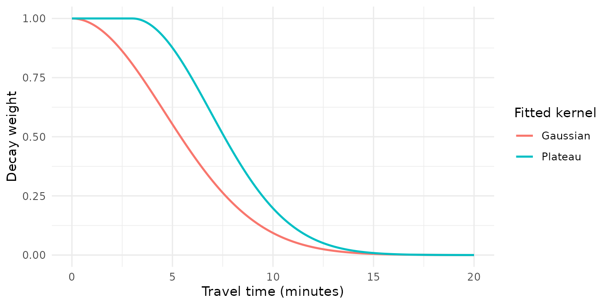
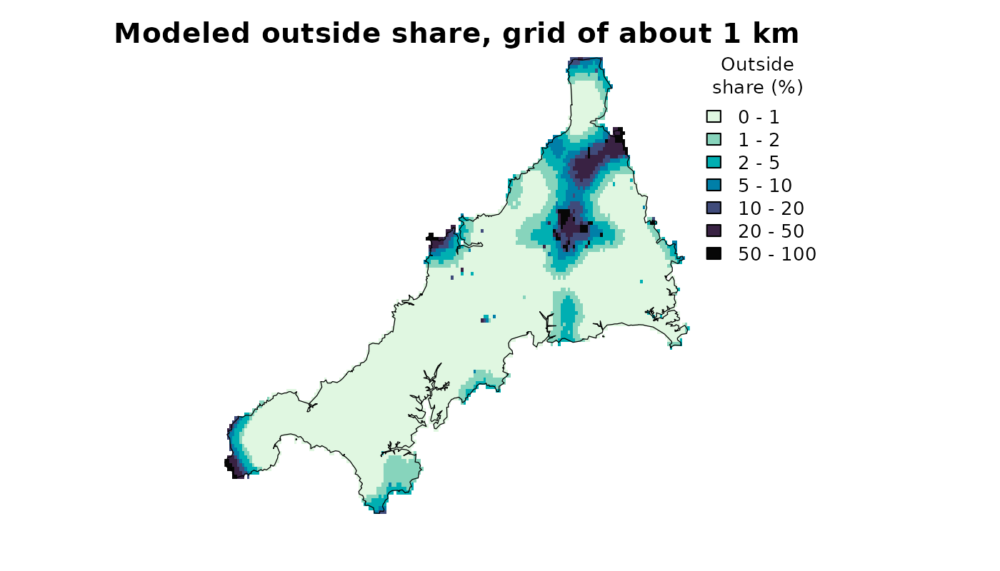

Extending the model: your own decay, raster data and grid maps
Source:vignettes/extending.Rmd
extending.RmdThe allocation model of Where do
residents register? uses a Gaussian decay and small areas. This
guide shows how to change both. You will declare a decay kernel of your
own and fit it, fit the model on a population grid instead of small
areas, and map a fitted model’s outputs on that grid. The last section
says where demand groups fit in. The guide uses the registrations,
travel times and grids of The Cornwall GP
example data. The spax() interface and the allocation
model are experimental and may change in later versions.
The model to extend
The starting point is the conditional logit model (CLM) fitted to the registrations of mainland Cornwall. Demand is the number of residents of each small area registered with a GP practice, and supply is each practice’s GP full-time equivalents (FTE), excluding GPs in training. Each practice attracts residents in proportion to its supply times a decay weight of the travel time, and an outside option, registration with a practice outside mainland Cornwall, takes the rest with a weight v0 of its own. The inputs are those of the other allocation guides.
areas <- cornwall_lsoa |>
filter(!scilly) |>
st_drop_geometry()
gp <- cornwall_gp |>
filter(!scilly) |>
st_drop_geometry()
travel <- cornwall_travel[areas$lsoa, gp$practice]
demand <- setNames(areas$registered, areas$lsoa)
supply <- setNames(gp$gp_fte_extg, gp$practice)
d <- prep_data(demand, supply, travel, metadata = list(
demand_units = "registered residents", demand_period = "July 2026",
supply_units = "GP FTE excluding GPs in training", supply_period = "June 2026",
travel_units = "minutes"))
flows <- obs_flows(cornwall_flows, origin = "lsoa", facility = "practice", count = "patients")The default specification has a Gaussian decay whose travel scale σ, in minutes, sets how fast the weight falls with travel time. σ is fitted together with the outside weight v0.
# Gaussian decay and outside weight, both fitted to the registrations
clm <- spax(d, spec_clm(), observed = flows)observed: 2,290 counts from 1 origin outside the data or left out by it are dropped; 5 counts at 1 facility outside the data are not fitted (outside = "known" uses them as outside counts)
coef(clm) sigma v0
4.59099725 0.02733454 The message about the Isles of Scilly is explained in Where do residents register?; the later fits on the same data print it too.
The fitted σ is 4.6 minutes. The next section fits a kernel of your own to the same data and compares the two fits.
Your own decay
A decay kernel turns a travel time into a weight. spax has built-in
Gaussian, exponential and power kernels, whose σ can be fitted.
decay_kernel() declares your own from an R function of
distance and sigma, and
decay_custom() puts it in a model specification. The kernel
below gives full weight to every practice within 3 minutes, where a
minute more or less hardly matters, and falls as a Gaussian curve beyond
that, with σ the scale of the fall.
# Full weight within `plateau` minutes, Gaussian decay beyond
plateau_weight <- function(distance, sigma, plateau) {
ifelse(
distance <= plateau,
1,
exp(-(distance - plateau)^2 / (2 * sigma^2))
)
}
plateau_kernel <- decay_kernel(
plateau_weight,
name = "plateau",
parameter = "scale",
args = list(plateau = 3)
)
plateau_kernel<spax_decay_kernel> plateau
sigma: scale
bounds on sigma: 0 to Inf
defined at distance 0: yes
smooth in sigma: yes
fixed arguments: plateau = 3
function:
function (distance, sigma, plateau)
{
ifelse(distance <= plateau, 1, exp(-(distance - plateau)^2/(2 *
sigma^2)))
}The print shows what the declaration stores: the function’s code as
text, which is rebuilt into a function whenever the kernel is used. So
the function can use only its arguments, base R, pkg::fn
calls and the fixed values in args, not objects from your
workspace. A result that uses the kernel carries this code and runs it
when used again, so read saved results only from sources you trust.
?decay_kernel lists the other rules.
decay_custom() takes the place of
decay_gaussian() in spec_clm(), and σ and v0
are fitted as before.
# The plateau kernel in place of the Gaussian, with sigma and v0 fitted
clm_plateau <- spax(d, spec_clm(decay = decay_custom(plateau_kernel)),
observed = flows)
clm_plateau<spax allocation> conditional logit with an outside option
decay plateau (sigma = scale): fit
attraction (kappa * supply)^beta: kappa = 1, beta = 1
outside v0: fit
data 336 origins x 54 facilities
parameter value status
sigma 3.887 fitted
v0 0.05434 fitted
beta 1 held
kappa 1 held
selected scan2 (start 2 of 3); 3 of 3 starts converged
boundary none
starts default search, 45 of 45 grid points, loss poissonThe plateau kernel’s σ is 3.89 minutes, against 4.59 for the Gaussian kernel. Each σ sets the scale of its own kernel’s fall. The plateau kernel starts falling only at 3 minutes, so a smaller σ does not mean less weight at a given time.
The plot shows the two fitted kernels.
# Each fitted kernel's weight from 0 to 20 minutes
minutes <- seq(0, 20, by = 0.1)
curves <- bind_rows(
data.frame(
minutes,
kernel = "Gaussian",
weight = exp(-minutes^2 / (2 * sigma_gaussian^2))
),
data.frame(
minutes,
kernel = "Plateau",
weight = plateau_weight(minutes, sigma_plateau, plateau = 3)
)
)
ggplot(curves, aes(minutes, weight, color = kernel)) +
geom_line(linewidth = 0.8) +
labs(
x = "Travel time (minutes)",
y = "Decay weight",
color = "Fitted kernel"
) +
theme_minimal()
At 9 minutes the plateau kernel keeps 0.30 of its weight, the Gaussian kernel 0.15.
compare_fits() sets fits side by side. Given results of
spax(), it takes each model from its result and checks that
both fits use the same registrations, loss and travel times. The loss
measures how far the fitted registrations are from the observed ones.
Lower is closer, and the table gives each fit’s loss difference from the
first fit.
# Loss differences are measured from the first fit, the Gaussian
comparison <- compare_fits(list(gaussian = clm, plateau = clm_plateau))
as.data.frame(comparison)[
c("specification", "parameters", "loss_difference", "count_correlation")
] specification parameters loss_difference count_correlation
1 gaussian sigma=4.591, v0=0.02733 0.00 0.8846533
2 plateau sigma=3.887, v0=0.05434 62248.12 0.8464323The plateau fit’s loss is higher by 62,248, and its fitted registrations by area and practice correlate with the observed ones at 0.85, against 0.88 for the Gaussian fit. On these data the Gaussian kernel fits better. Reading results says what such a comparison can show.
Fitting on raster data
An allocation model can also run on a population grid.
prep_data() takes a population raster and a travel stack, a
raster with one layer of travel minutes per practice. Each populated
cell becomes an origin, a place residents start from, so no small areas
are needed. The chunk is the grid recipe of the other guides, copied
whole.
gp <- cornwall_gp |>
filter(!scilly) |>
st_drop_geometry()
pop <- read_spax_example("cornwall_pop.tif")
travel_grid <- read_spax_example("cornwall_gp_travel.tif")[[gp$practice]]
# Keep cells with a travel time to every mainland practice
pop <- trim(mask(pop, sum(travel_grid)))
travel_grid <- crop(travel_grid, pop)
grid_data <- prep_data(pop, gp, travel_grid, id_col = "practice", supply_cols = "gp_fte_extg")The recipe ends with grid_data, the input of the
floating catchment area (FCA) indices, whose demand is WorldPop’s
estimate of residents in 2020. A fit needs demand that counts the same
people as the observations, so the next chunk prepares the same grid
again with its demand rescaled.
The observations here are practice totals: the mainland residents
registered at each mainland practice, summed from
cornwall_flows. The list sizes in cornwall_gp
would also count patients who live outside mainland Cornwall. The grid
is scaled to the sum of the totals, so the grid says where these
residents live and the totals say how many there are.
# Registrations of mainland residents at each mainland practice
practice_totals <- cornwall_flows |>
filter(lsoa %in% areas$lsoa, practice %in% gp$practice) |>
group_by(practice) |>
summarise(patients = sum(patients))
totals <- obs_totals(practice_totals, facility = "practice", count = "patients")
totals<spax obs> totals: 54 facility counts, total 598,974; loss poisson
# The grid scaled to the same residents: where they live, not how many
grid_residents <- global(pop, "sum", na.rm = TRUE)[[1]]
registered_grid <- pop * sum(practice_totals$patients) / grid_residents
registered_data <- prep_data(registered_grid, gp, travel_grid,
id_col = "practice", supply_cols = "gp_fte_extg")
registered_data<spax data> raster 117 x 187 cells x 54 facilities; supply gp_fte_extg
demand 1 layer; travel 54 layers
note holds terra rasters: prepare the data again after saveRDS()The prepared data hold the rasters as they are. spax()
turns the cells with residents into origins each time it runs a model on
them.
The grid was scaled so that every resident counted is registered at a
mainland practice. That leaves nothing for an outside option, so this
section fits the Huff model, which has none. It shares each cell’s
residents among the practices in proportion to attraction times decay
weight. By default spec_huff() fits a power decay, whose σ
is an exponent (the weight is the travel time to the power −σ), and an
attractiveness exponent β (the attraction is GP FTE to the power β).
# Huff model on the grid, fitted to the practice totals
huff_grid <- spax(registered_data, spec_huff(), observed = totals)
huff_grid<spax allocation> Huff model (no outside option)
decay power (sigma = exponent): fit
attraction (kappa * supply)^beta: kappa = 1, beta = fit
outside none
data 6,912 origins x 54 facilities
parameter value status
sigma 1.059 fitted
beta 0.6123 fitted
v0 0 held
kappa 1 held
selected scan1 (start 1 of 3); 3 of 3 starts converged
boundary none
starts default search, 15 of 15 grid points, loss poissonThe 6,912 populated cells are the origins, named by their cell
numbers. Of the 3 starting points, 3 converged, and spax()
keeps the best of them.
as.data.frame(huff_grid, type = "starts") lists all 3.
A σ of 1.06 means that a practice twice as far away gets 0.48 of the weight. A β of 0.61 means that a practice with twice the GP FTE attracts 1.53 times as many residents, other things equal.
Totals say how many residents each practice has, not where they live.
check_fit() asks whether travel time matters to the fit. It
compares the fit, on the same loss, with an allocation without distance
decay and with one in proportion to attraction alone.
huff_check <- check_fit(huff_grid)
huff_check<allocation check>
comparator loss loss_difference contact trip_median trip_p90
fitted -5042070 0 1 11 53
no_decay -5038282 3788 1 40 85
capacity_only -5038282 3788 NA 40 85
Trip lengths are one-way, in travel units, weighted by expected flows.
The fitted allocation reproduces the counts better than both comparators.Every cell reaches every practice, so the two simpler allocations
coincide here and their rows match. Both reproduce the totals less well:
their loss is higher by 3,788, so travel time matters to this fit, and
their median trip is 40 minutes against the fit’s 11. The
contact column, the share of residents modeled to use a
practice in the data, is 1 because the Huff model has no outside
option.
The travel of the origins is held as a matrix of 6,912 cells by 54
practices, about 3 MB, and a fit needs about 8 times its memory or more
(see ?prep_data). Crop or coarsen a much larger grid first.
Grid resolution and computational
cost shows what a coarser grid changes.
Maps on the grid
A fitted model predicts at any place that has travel times to its
practices. Every populated cell of the grid has them, so the small-area
fit clm can map its outside share across the grid.
predict() takes a travel matrix with one row per cell.
spatial says which raster cell each row is, and
type = "raster" returns a map on the grid.
# Travel from each populated cell to each practice, rows named by cell number
populated <- which(values(pop)[, 1] > 0)
grid_travel <- values(travel_grid)[populated, ]
rownames(grid_travel) <- populated
# The small-area fit's outside share at every populated cell, as a raster
grid_outside <- predict(clm, grid_travel,
outputs = "outside_share",
spatial = list(template = pop, cell_index = populated),
type = "raster"
)
# Mainland Cornwall's outline, in the grid's longitude and latitude
outline <- cornwall_lsoa |>
filter(!scilly) |>
st_union() |>
vect()
plot(
100 * grid_outside,
breaks = c(0, 1, 2, 5, 10, 20, 50, 100),
col = hcl.colors(7, "Mako", rev = TRUE),
axes = FALSE,
main = "Modeled outside share, grid of about 1 km",
plg = list(title = "Outside\nshare (%)")
)
lines(outline, lwd = 0.6)
In 70% of the cells the modeled outside share is below 1%. It rises only far from every practice: around Bodmin Moor and inland in the north-east, at the western tip and on the north coast around Padstow.
The table counts the cells where more than half of the residents are modeled to register outside mainland Cornwall, and their share of the grid’s residents.
# Cells with an outside share above one half, and their share of residents
cell_share <- values(grid_outside, mat = FALSE)[populated]
cell_residents <- values(pop, mat = FALSE)[populated]
far_out <- cell_share > 0.5
data.frame(
cells = sum(far_out),
residents_percent = round(100 * sum(cell_residents[far_out]) / sum(cell_residents), 2)
) cells residents_percent
1 74 0.06The 74 cells above one half hold 0.06% of the grid’s residents. Their share is high because the fitted travel scale is short and the outside weight is the same everywhere. No small area is modeled above 14%, so these values extend the model to places unlike the areas it was fitted to: read them as extrapolation.
Demand groups
Residents can differ in how far they travel, for example by age. The allocation model takes demand groups in three places:
-
prep_data(): demand as a named list of vectors, one per group, and travel as one matrix for all groups or a named list of them. -
spec_clm(): a named list of decays, one per group, orby_group = "sigma"(or"v0") to let one fitted parameter differ by group. -
observed: counts by group, fromobs_totals()with a group column or a matrix of facilities by groups.
A parameter that differs by group can be fitted only to counts
recorded by group. The small areas have ONS population estimates by age
band (pop_0_15, pop_16_64 and
pop_65p in cornwall_lsoa), but the
registrations are not split by age, so this guide fits no groups. The
FCA indices take demand groups on the grid, and Which FCA index? shows
them.
Next
- What if a practice closed?: hold the fitted values and change the supply.
-
How sure are the estimates?:
bootstrap intervals for a CLM fitted to facility totals (a declared
kernel needs
smooth = TRUE; see?bootstrap_fit). - Grid resolution and computational cost: what a finer or coarser grid costs and changes.
-
Function map: the step functions
that
spax()runs, for finer control.